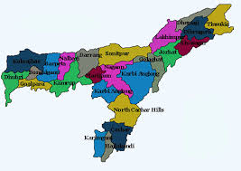

| Name: | Assam |
|---|---|
| Capital: | Dispur |
| Language: | Assamese |
| Chief Minister: | Himanta Biswa Sarma |
| Total Districts: | 33 |
| Population: | ~31 million (as per 2011 census) |
| Formation: | 15 August 1947 |
| Area: | 78,438 km² (14th largest in India) |
| Borders: | Arunachal Pradesh, Nagaland, Manipur, Mizoram, Meghalaya, West Bengal, Bhutan, Bangladesh |
| Coastline: | None (Landlocked State) |
Know more